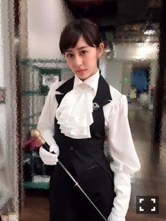

| 2016/07 08 Fri | 愛犬さくら(´>∀<｀)ゝ |
ちはるーむへようこそ\( ˆoˆ )/
最近メンバーに、「うちのさくちゃんがね〜」って話すと
「え？誰？わんちゃん？犬飼ってるの？」
って聞かれる事が多くて、
みんな知らないんだ！！！って
びっくりしています。
だから皆さんも知らないかも...？？
と思って、改めて紹介しますー\( ˆoˆ )/
多分すっごい昔に紹介しただけだったもんね！
斎藤家の三女、ミニチュアダックスフンドの
「さくら」です♡

可愛いでしょ〜(﹡ˆ ˆ﹡)
素敵でしょ〜(﹡ˆ ˆ﹡)
賢い顔してるでしょ〜(﹡ˆ ˆ﹡)
犬バカだよ〜(﹡ˆ ˆ﹡)
今日さくちゃんの横にバフッと寝転がったら
さくちゃんは抵抗せず一緒に寝てくれました♡
優しい〜♡可愛い〜♡
これからもずっと仲良く暮らせたらいいなって思います\( ˆ ˆ )/
本当さくちゃんいると元気になれるもん！
ペットというか家族というか...
大切な存在です♡
-------------------------♡
美容院行ってきました〜！
ブルージュに染めて、カットもしたんだけど
前髪も切ってもらっちゃいました♪
久しぶりに前髪がこれくらい短くて動揺。
少し幼くなったかな？？
(そういえば！新しいチョーカーだよ♡)
(「DAMMY」っていうブランド♡)
(ちなみに赤のニットキャミソールは、Honey Cinnamonだよ♡)
切る前はこんな感じで、とっても長かった！
メイクが薄いからかな？
男装してるみたい...笑
...男装？
男装...男装...だん...だ...しつ...執事...執事。
(上手く繋げられず。)

いつかの生写真のときの。
温存していました。ずっと。
久しぶりの前髪で
嬉しくもあり恥ずかしくもあり。
これくらいの長さだと横に流すこともできるし
巻けば目の上にもなるし、
色々なアレンジしたいな！と思ってます。
アレンジしたら載せるね♪
-------------------------♡
何度目の青空か？のときのオフショット。
私のお気に入り。
隣にいるのはみなみと、ずーだよ！
懐かしいな〜
楽しかったな！
またこの時に戻りたいな。
いや、この時以上になりたいな。
何事も我慢と辛抱と続けることが大事だよね。
頑張ろう。
-------------------------♡
まだまだコーナー募集中♪
何それ〜って方は前々回のブログ参照だよ〜
Chiharu ♫ Now Playing
「大好き」大原櫻子さん
カラオケで歌えるようになりたいから
聴きながら歌を練習中♡
おやすみ〜！
斎藤ちはる
コメント(281)
2016/07/08 23:12